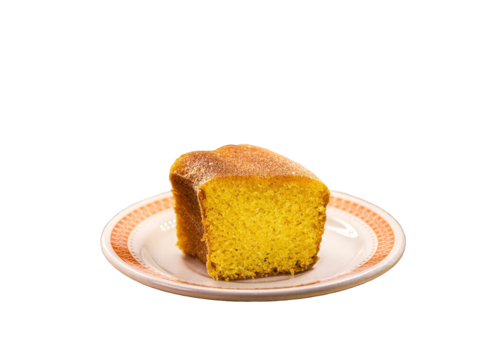

Receita do dia |
Receita de Bolo rápido |
|
|---|---|---|
 |
Essa é uma receita de Nuquidito fácil e rápida de fazer, ideal para aquela sobremesa de última hora. |
|
Ingredientes |
Modo de Preparo |
|
|
|
|
| Bom apetite! | ||
| Para mais receitas como esta, clique aqui | ||